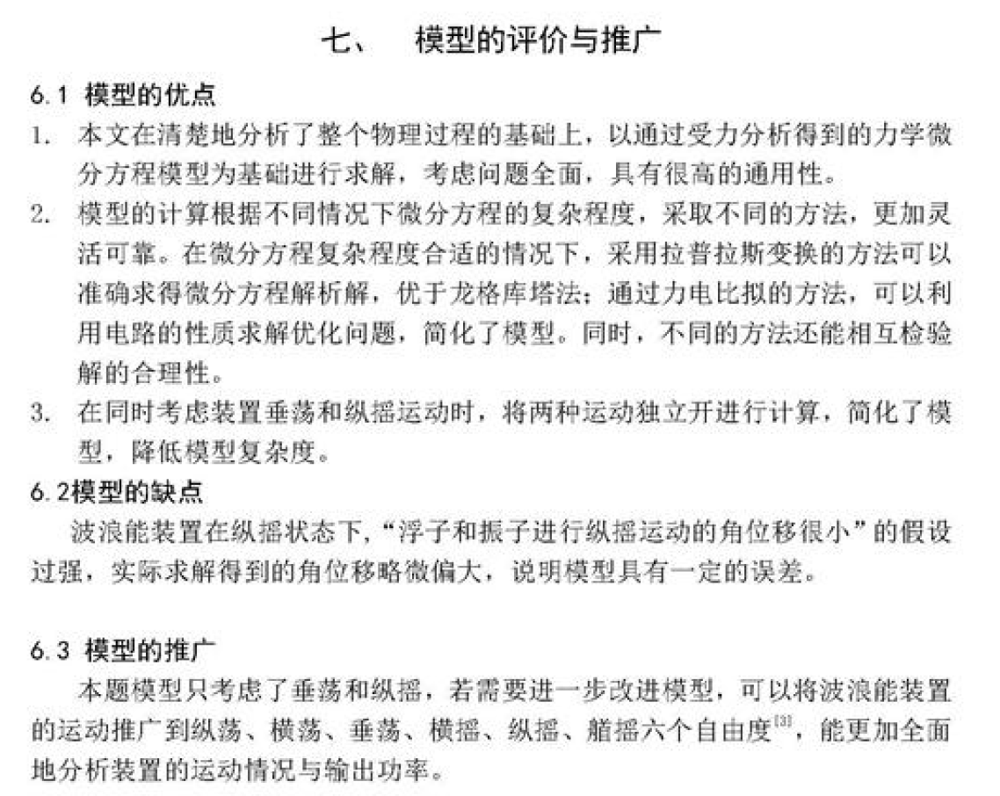
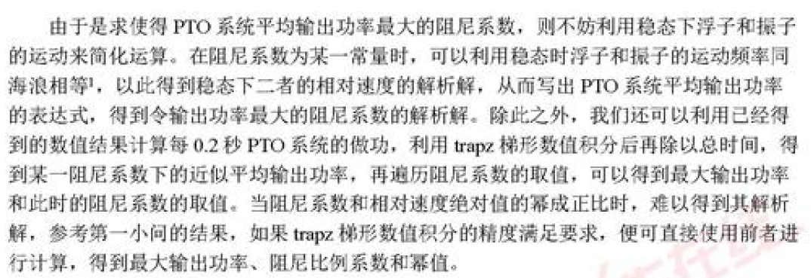
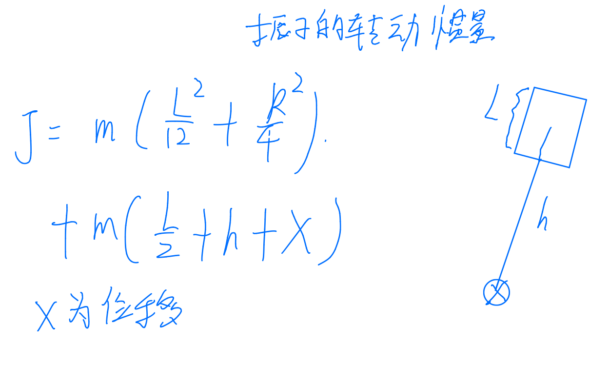

模型
第二类拉格朗日方程
质心
转动惯量
参考系变化
程序
微分方程为二阶常系数和非常系数非齐次线性微分方程组，该文用拉普拉斯变换法求常系数微分方程解析解，非常系数用龙格库塔求解，对于数值解（可能存在误差）做了误差分析 证明可靠性
（且可解出第二问第一小问的解析解
拉普拉斯变换法：常微分方程 138~145
这里的解析解是用Wolfram Mathematica 算的
论文内容：
Question 数值解法用的matlab中的ode45 但在论文中给出了经典四阶龙格库塔公式，事实上matlab ode45 是45阶龙格库塔，且四阶龙格库塔公式不只一种

论文处理方法：


力电比拟法 对 问题进行转化 同样是解析+数值
数值方法求解得到的速度数据是离散的，求功要对离散数据进行数值积分（梯形法 traphz
数值方法即为一个优化问题（变量是一维以及二维的）
Question 没有对浮子的圆锥部分是否会浮出水面进行约束或讨论
论文处理：作为约束的限制条件
应该不用考虑，若发生碰撞，则有能量的损失。若不加约束，而优化的最优结果显示没发生碰撞，说明其他情况即使无碰撞所产生的能量也不如最优情况（视结果而定
- 分别考虑垂荡和纵摇，不考虑两个运动间的耦合关系，做了假设 （故垂荡模型完全不变
- 且在做纵摇运动时，使用整体法，假设浮子和振子的相对角位移较小，振子的中轴和浮子中轴平行
- 变换了转轴位置（原本是系统的质心处，而与海水有接触的实际上只有浮子，故文章认为所有题目给的力矩作用点是在浮子质心处

参考系变换
假设的合理性：（题目中的

故运动模型：

模型求解：龙格-库塔
Question1 x1 x2 应该是theta1 和theta2 F2 和F3 应该是M2 和M3
Quetion2 对于振子的转动 没有考虑重力矩 （重力分解到沿轴方向和垂直轴方向，在垂直轴方向和支持力抵消了？
论文处理：按面积均匀，但面积好像算错了

依据参考文献所得 静水恢复力等力都是作用在质心上面的 故 它的质心是任意取得
文献：(但是一本书 无法考证)
质心计算公式： 应该错了 后面那项算的是圆柱体

振子转轴显然
这里推导并不详细

根据假设，纵摇和垂荡相对独立，类似第一问可分析垂荡运动中圆锥部分是否浮出水面，且在文中完全没有出现关于这一点的讨论
通过实验结果对假设以及模型的合理性进行说明

无解析解，同样是一个优化问题（数值解法
没有考虑

解析解 与 数值解的比较（只做了第一小问 。 实际还有第二问第一小问也是解析+数值，也可以进行分析
直观展示出数值方法的解析法之间的误差

运动模型相同，数值解
无
- 解析解+数值解 结果比较 较第一篇更数学 （求解析解原理：受迫振动最终运动频率和所受力的频率相同 ，故可设x=x_max*cos(wt) 【简谐运动】19.受迫振动与共振哔哩哔哩bilibili
- 解析解法：表达式+求导求极值

同样分析浮子的垂荡运动时没有考虑纵摇（认为角位移是小量
但在分析振子的垂荡运动时考虑了纵摇的影响
而根据垂荡运动的初步结果，认为他们之间的相对位移也是小量，据此在分析浮子的纵摇运动时，认为浮子和振子是整体的（因为文章认为题目给的力矩的转轴在浮子和振子这一整体的质心上的 （整体法），而随着振子的垂荡作用，整体的质心会发生改变。） 与第一篇相比，第一篇认为作用点是浮子的质心
再去分析振子的纵摇运动
模型看不懂，几乎没有推导 （第三问 （解 ： 这里是非惯性系
初步计算
这里 y1 不知道是什么 第二条式子公式右边很奇怪（解 ： 这里是非惯性系
纵摇运动模型：
按面积密度均匀
整体的质心（or say 重心）（文献 没标明
无详细推导
浮子质心距离转轴位置o的距离：

这篇有 丶 抽象，用事实证明自己写的龙格库塔其实也行，没有调包。不数学 偏算法 没有解析解 算力惊人 代码能力也很猛
但说的改进算法其实没有 且 第三问 认为转轴在质心，但扭转弹簧和阻尼器对浮子的力矩是以o点为转轴的，选取的转轴不同没有注意到这一点
与前类似
作为优化的约束条件
无
遗传算法
类A171
认为在质心
除了遗传算法，代码几乎都是基础实现的
MATLAB遗传算法工具箱 ： https://blog.csdn.net/viafcccy/article/details/94429036
三篇文章 第一篇静水恢复力矩等作用点是浮子和振子的整体的质心 第二篇认为静水恢复力矩等力矩对应转轴是浮子和振子的整体的质心 （和他们建立的模型有关 13 都是隔离法 2用了整体法（都是选择了能使模型简化的那种
若是以第一篇的思路，则力的作用点已知，则可将各个力矩的作用点统一到一个点上
而第二篇通过假设 使用整体法 即可以不用对浮子进行单独的分析 规避了这个问题
显然第二篇的模型更优美一点 第一篇参考文献无法找到，无法考证，更像是一个假设， 且不考虑耦合计算结果明显有问题，倾向于后者
第三篇 这里根本没考虑
文献： 质心 事实上可以选取任意转轴（可进行转化），但要清楚题目所给力矩的作用点在哪里
外力作用点 ： 浮子的质心 or 浮子和振子的整体的质心 （倾向于前者
浮子质心的计算：
l是圆锥的母线长
应该是距离底端 ans = 2.2298
振子转动惯量的计算：
有圆柱体的转动惯量计算公式：常见几何体转动惯量公式推导 - 知乎 (zhihu.com)
其中L 是圆柱母线长 R是底面半径长度


浮子的转动惯量
matlab求解结果为：
总 = 圆柱 + 圆锥
ans = 8.4223e+03
ans = 3.6139e+03
ans = 4.8085e+03
面积均匀
前两篇都有考虑，具体方法为先假设，后验证。第三篇没有，但有加入优化问题的约束条件中

具体实例参见 几类常微分方程的matlab求解方法 | 刚性微分方程、隐式微分方程、微分代数方程matlab常微分方程深海深夜深的博客-CSDN博客
注：刚性问题——在用微分方程描述的一个变化过程中，往往又包含着多个相互作用但变化速相差十分悬殊的子过程，这样一类过程就认为具有“刚性”。描述这类过程的微分方程初值问题称为“刚性问题”。例如，宇航飞行器自动控制系统一般包含两个相互作用但效应速度相差十分悬殊的子系统，一个是控制飞行器质心运动的系统，当飞行器速度较大时，质心运动惯性较大，因而相对来说变化缓慢；另一个是控制飞行器运动姿态的系统，由于惯性小，相对来说变化很快，因而整个系统就是一个刚性系统。
Matlab求解微分方程
只有第二篇考虑会不会碰到顶端，纵摇是否会导致相撞都没有考虑
训练
模型建立艰难
静水恢复力
圆锥露出水面
两种运动耦合导致方程变为刚性微分方程 无法求解